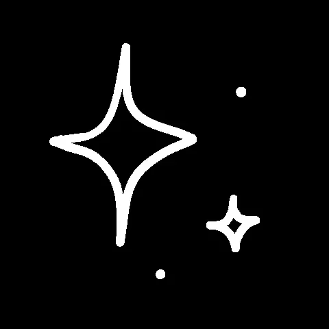

Music by ScrewedQueen from Pixabay
ERROR 418: I'm a teapot
LOADING...
SYSTEM CRASH
UNKNOWN SIGNAL
Pinou007
404: File not found
ALERT: Keyboard not found
Pinou007
SYSTEM FAILURE
LOADING... 99%
ERROR: Bad Request